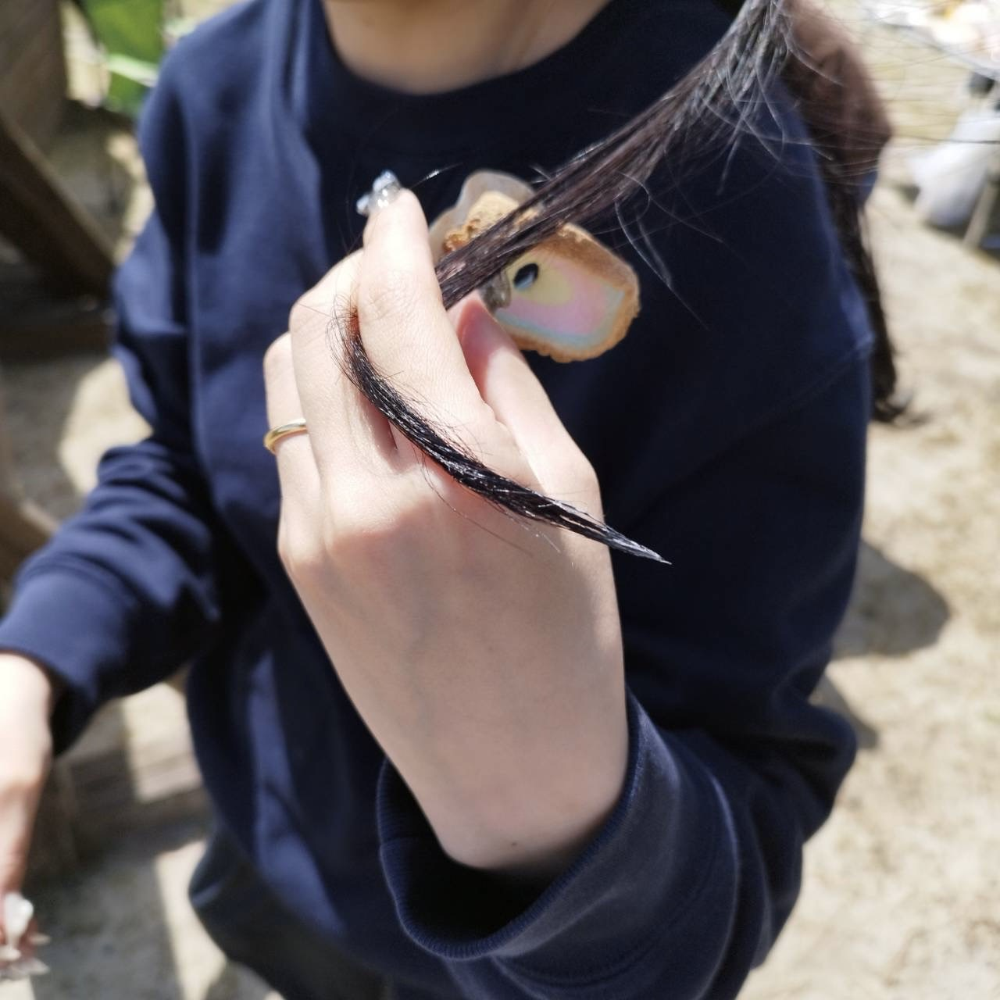
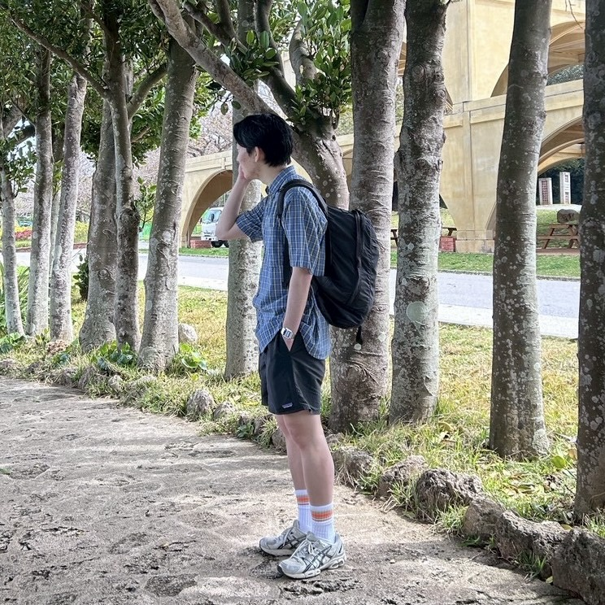

About
ごめんねは、森下、森下の幼馴染の木村、森下のブログを崇拝している中村の 3 人で喋る Podcast。 みんなで本当のことを話します。森下はたまに出演します。 Spotify と Apple Podcast で配信中。
Members

森下
木村

中村
2001 年生まれ、岐阜県出身。元バスケ部。 学生時代は京都でプロテインとミニマリストについて研究をしていた。 現在は東京在住、IT 企業勤務。